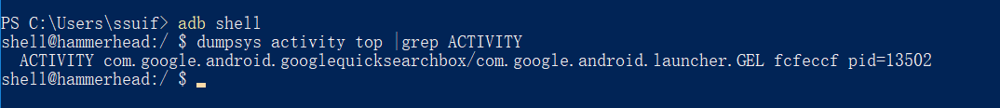
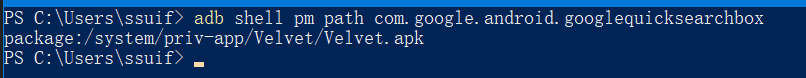

在智能手机的日常使用中，最常见的操作应该就是点击桌面图标然后打开对应app了，本文主要分析了在这个过程中系统做了什么事。
材料准备
- Android源码，Android可以下载源码到本地用source insight导入阅读，或者使用在线源码阅读工具，比如：AndroidXRef,官方源码在线阅读工具等。本文基于安卓源码android-6.0.1_r72版本分析。
- Android设备，本文使用设备是Nexus 5，Android版本号是6.0.1。
桌面Activity
系统桌面的源码在源码目录的android-6.0.1_r72\packages\apps\Launcher3下，查看该Launcher3目录下的AndroidManifest.xml发现其中只有com.android.launcher3.Launcher这个类包含了<category android:name="android.intent.category.HOME" />标签。可以确定桌面Activity是com.android.launcher3.Launcher
在实际设备中让设备处在桌面，然后执行
adb shell
dumpsys activity top |grep ACTIVITY可以得到当前的顶层Activity。
如图所示：

可以看到实际设备的桌面包名是com.google.android.googlequicksearchbox，实际桌面Activity是com.google.android.launcher.GEL。
接着使用adb shell pm path com.google.android.googlequicksearchbox命令可以看到桌面应用的apk所在位置。

反编译Velvet.apk这个包后发现com.google.android.launcher.GEL这个类实际也是继承自com.android.launcher3.Launcher，所以后续分析过程中还是以com.android.launcher3.Launcher为分析目标。
Launcher.java
首先，打开app的行为是在点击桌面图标后发生的，而且Launcher继承自Activity，所以先去看Launcher的onClick(View v)方法Launcher.onClick(View v)方法的代码如下：
Object tag = v.getTag();
if (tag instanceof ShortcutInfo) {
//原生桌面点击app生成的快捷图标后调用
onClickAppShortcut(v);
} else if (tag instanceof FolderInfo) {
if (v instanceof FolderIcon) {
onClickFolderIcon(v);
}
} else if (v == mAllAppsButton) {
onClickAllAppsButton(v);
} else if (tag instanceof AppInfo) {
//原生桌面点击抽屉中的app图标后调用
startAppShortcutOrInfoActivity(v);
} else if (tag instanceof LauncherAppWidgetInfo) {
if (v instanceof PendingAppWidgetHostView) {
onClickPendingWidget((PendingAppWidgetHostView) v);
}
}可以看到，在onClick中判断了view 的tag，当点击的是桌面的应用快捷方式时，tag的类型是ShortcutInfo。当点击的是桌面的文件夹时，tag的类型是FolderInfo。当点击的是app图标时，tag的类型是AppInfo。
所以接下来跳到Launcher的startAppShortcutOrInfoActivity(View v)方法。可以看到，当tag是ShortcutInfo类型时，给intent设置了SourceBounds。当tag是AppInfo时，则不做操作，直接把intent传给Launcher的startActivitySafely(View v,Intent intent,Object tag)方法。
@Thunk void startAppShortcutOrInfoActivity(View v) {
Object tag = v.getTag();
final ShortcutInfo shortcut;
final Intent intent;
if (tag instanceof ShortcutInfo) {
shortcut = (ShortcutInfo) tag;
intent = shortcut.intent;
int[] pos = new int[2];
v.getLocationOnScreen(pos);
intent.setSourceBounds(new Rect(pos[0], pos[1],
pos[0] + v.getWidth(), pos[1] + v.getHeight()));
} else if (tag instanceof AppInfo) {
shortcut = null;
intent = ((AppInfo) tag).intent;
} else {
throw new IllegalArgumentException("Input must be a Shortcut or AppInfo");
}
boolean success = startActivitySafely(v, intent, tag);
mStats.recordLaunch(v, intent, shortcut);
if (success && v instanceof BubbleTextView) {
mWaitingForResume = (BubbleTextView) v;
mWaitingForResume.setStayPressed(true);
}
}在startActivitySafely(View v,Intent intent,Object tag)方法中先判断了当前是否在安全模式，如果在安全模式下则不允许启动非系统应用。
通过判断后接着就调用了Launcher的startActivity(View v,Intent intent,Object tag)。startActivitySafely(View v,Intent intent,Object tag)的代码如下：
public boolean startActivitySafely(View v, Intent intent, Object tag) {
boolean success = false;
//如果在安全模式下不允许启动非系统应用
if (mIsSafeModeEnabled && !Utilities.isSystemApp(this, intent)) {
Toast.makeText(this, R.string.safemode_shortcut_error, Toast.LENGTH_SHORT).show();
return false;
}
try {
success = startActivity(v, intent, tag);
} catch (ActivityNotFoundException e) {
Toast.makeText(this, R.string.activity_not_found, Toast.LENGTH_SHORT).show();
Log.e(TAG, "Unable to launch. tag=" + tag + " intent=" + intent, e);
}
return success;
}private boolean startActivity(View v, Intent intent, Object tag) {
//第一步：为intent添加Intent.FLAG_ACTIVITY_NEW_TASK，当不存在和被启动activity相同的taskAffinity时，会新建一个任务栈来保存activity
intent.addFlags(Intent.FLAG_ACTIVITY_NEW_TASK);
try {
// Only launch using the new animation if the shortcut has not opted out (this is a private contract between launcher and may be ignored in the future).
boolean useLaunchAnimation = (v != null) &&
!intent.hasExtra(INTENT_EXTRA_IGNORE_LAUNCH_ANIMATION);
LauncherAppsCompat launcherApps = LauncherAppsCompat.getInstance(this);
UserManagerCompat userManager = UserManagerCompat.getInstance(this);
//第二步：获取user
UserHandleCompat user = null;
if (intent.hasExtra(AppInfo.EXTRA_PROFILE)) {
long serialNumber = intent.getLongExtra(AppInfo.EXTRA_PROFILE, -1);
user = userManager.getUserForSerialNumber(serialNumber);
}
//第三步：构建动画
Bundle optsBundle = null;
if (useLaunchAnimation) {
ActivityOptions opts = null;
if (Utilities.ATLEAST_MARSHMALLOW) {
int left = 0, top = 0;
int width = v.getMeasuredWidth(), height = v.getMeasuredHeight();
if (v instanceof TextView) {
// Launch from center of icon, not entire view
Drawable icon = Workspace.getTextViewIcon((TextView) v);
if (icon != null) {
Rect bounds = icon.getBounds();
left = (width - bounds.width()) / 2;
top = v.getPaddingTop();
width = bounds.width();
height = bounds.height();
}
}
opts = ActivityOptions.makeClipRevealAnimation(v, left, top, width, height);
} else if (!Utilities.ATLEAST_LOLLIPOP) {
// Below L, we use a scale up animation
opts = ActivityOptions.makeScaleUpAnimation(v, 0, 0,
v.getMeasuredWidth(), v.getMeasuredHeight());
} else if (Utilities.ATLEAST_LOLLIPOP_MR1) {
// On L devices, we use the device default slide-up transition.
// On L MR1 devices, we a custom version of the slide-up transition which
// doesn't have the delay present in the device default.
opts = ActivityOptions.makeCustomAnimation(this,
R.anim.task_open_enter, R.anim.no_anim);
}
optsBundle = opts != null ? opts.toBundle() : null;
}
//第四步：执行启动
if (user == null || user.equals(UserHandleCompat.myUserHandle())) {
// Could be launching some bookkeeping activity
startActivity(intent, optsBundle);
} else {
// TODO Component can be null when shortcuts are supported for secondary user
launcherApps.startActivityForProfile(intent.getComponent(), user,
intent.getSourceBounds(), optsBundle);
}
return true;
} catch (SecurityException e) {
Toast.makeText(this, R.string.activity_not_found, Toast.LENGTH_SHORT).show();
Log.e(TAG, "Launcher does not have the permission to launch " + intent +
". Make sure to create a MAIN intent-filter for the corresponding activity " +
"or use the exported attribute for this activity. "
+ "tag="+ tag + " intent=" + intent, e);
}
return false;
}在Launcher的startActivity(View v,Intent intent,Object tag)中一共做了四件事。
第一件事是为intent添加一个Intent.FLAG_ACTIVITY_NEW_TASK。如果当前不存在和被启动activity相同taskAffinity的任务栈，那就会新建一个任务栈来存放新启动的activity。
第二件事是从UserManagerCompat的单例对象中获取对应的UserHandleCompat。
// todo 解释UserHandleCompat 和 UserManagerCompat
第三件事判断intent中是否包含INTENT_EXTRA_IGNORE_LAUNCH_ANIMATION，如果包含就忽略动画。
如果不包含则默认需要播放动画，接着根据不同Android版本构建ActivityOptions
第四件事，如果user和new UserHandleCompat(android.os.Process.myUserHandle()相同则调用Activity的startActivity(Intent intent, @Nullable Bundle options)。
android.app.Activity.java
在Activity的startActivity(Intent intent, Bundle options)中，因为options非空，会调用Activity的startActivityForResult(Intent intent, int requestCode, Bundle options)。中间的requestCode默认传了-1，表示不关心返回结果
在Activity的startActivityForResult(Intent intent, int requestCode, Bundle options)中首先判断了mParent是否为空，当mParent为空时，由Instrumentation来执行启动操作，如果mParent不为空，则由mParent来执行启动操作。startActivityForResult(Intent intent, int requestCode, @Nullable Bundle options)的代码如下：
public void startActivityForResult(Intent intent, int requestCode, @Nullable Bundle options) {
if (mParent == null) {
//当mParent为空时由mInstrumentation继续处理启动流程
Instrumentation.ActivityResult ar =
mInstrumentation.execStartActivity(
this, mMainThread.getApplicationThread(), mToken, this,
intent, requestCode, options);
if (ar != null) {
mMainThread.sendActivityResult(
mToken, mEmbeddedID, requestCode, ar.getResultCode(),
ar.getResultData());
}
if (requestCode >= 0) {
mStartedActivity = true;
}
cancelInputsAndStartExitTransition(options);
} else {
if (options != null) {
mParent.startActivityFromChild(this, intent, requestCode, options);
} else {
mParent.startActivityFromChild(this, intent, requestCode);
}
}
}这里的mParent为空，所以调用了Instrumentation的ActivityResult execStartActivity(Context who, IBinder contextThread, IBinder token, Activity target,Intent intent, int requestCode, Bundle options)方法，方法很长，一共传了7个参数。分别是：
Context who：
The Context from which the activity is being started.
启动activity操作的来源Context，可以直接认为是startActivity()的调用者。
这里传入的就是com.google.android.launcher.GEL自身
IBinder contextThread：
The main thread of the Context from which the activity is being started.
启动activity的Context的主线程。
这里用mMainThread.getApplicationThread()获取了ActivityThread中保存的ApplicationThread
IBinder token：
Internal token identifying to the system who is starting the activity; may be null.
为系统标识当前正在启动activity的是谁。可能为空。
这里传递了当前com.google.android.launcher.GEL的mToken，用来标识当前是com.google.android.launcher.GEL正在启动activity。
Activity target：
Which activity is performing the start (and thus receiving any result); may be null if this call is not being made from an activity.
正在执行Activity启动操作的Activity。如果不是从一个Activity发起的启动操作，该项可能为空。
这里传入的也是com.google.android.launcher.GEL自身
Intent intent：
The actual Intent to start.
启动的实际Intent。
int requestCode：
Identifier for this request’s result; less than zero if the caller is not expecting a result.
请求结果的标识，如果调用者不关注结果则传入负值。
这里传入的是-1
Bundle options
Addition options
附加选项
这里传入的是调用startActivity时传入的options
Instrumentation的execStartActivity方法代码如下：
public ActivityResult execStartActivity(
Context who, IBinder contextThread, IBinder token, Activity target,
Intent intent, int requestCode, Bundle options) {
IApplicationThread whoThread = (IApplicationThread) contextThread;
Uri referrer = target != null ? target.onProvideReferrer() : null;
if (referrer != null) {
intent.putExtra(Intent.EXTRA_REFERRER, referrer);
}
if (mActivityMonitors != null) {
synchronized (mSync) {
final int N = mActivityMonitors.size();
for (int i=0; i<N; i++) {
final ActivityMonitor am = mActivityMonitors.get(i);
if (am.match(who, null, intent)) {
am.mHits++;
if (am.isBlocking()) {
return requestCode >= 0 ? am.getResult() : null;
}
break;
}
}
}
}
try {
intent.migrateExtraStreamToClipData();
intent.prepareToLeaveProcess();
int result = ActivityManagerNative.getDefault()
.startActivity(whoThread, who.getBasePackageName(), intent,
intent.resolveTypeIfNeeded(who.getContentResolver()),
token, target != null ? target.mEmbeddedID : null,
requestCode, 0, null, options);
checkStartActivityResult(result, intent);
} catch (RemoteException e) {
throw new RuntimeException("Failure from system", e);
}
return null;
}这里可以看到第一步是先从target中获取referrer，在Activity的onProvideReferrer()方法中默认是直接返回null的。如果这里的target是继承了Activity的子类并重写了onProvideReferrer()方法，那么就能从中获取到Uri了。
接下来的mActivityMonitors相关的内容是与InstrumentationTestCases测试相关的。在这里不多加讨论。
启动相关的内容在后续的try-catch块中。
首先调用Intent的migrateExtraStreamToClipData方法将intent中的extra数据序列化传递给目标进程。
然后调用Intent的prepareToLeaveProcess方法做好离开当前线程的准备。
接下来就是调用ActivityManagerNative.getDefault()得到了一个android.app.ActivityManagerProxy对象。
先来看看getDefault()方法是怎么获取到这个ActivityManagerProxy对象的。
在ActivityManagerNative.getDefault()中只有一行代码。
static public IActivityManager getDefault() {
return gDefault.get();
}这里的gDefault实际上是定义在ActivityManagerNative中的静态变量，具体类型如下：
private static final Singleton<IActivityManager> gDefault = new Singleton<IActivityManager>() {
protected IActivityManager create() {
IBinder b = ServiceManager.getService("activity");
if (false) {
Log.v("ActivityManager", "default service binder = " + b);
}
IActivityManager am = asInterface(b);
if (false) {
Log.v("ActivityManager", "default service = " + am);
}
return am;
}
};可以看到gDefault就是一个实现了IActivityManager接口的ActivityManagerProxy对象。
所以实际上这里是调用了ActivityManagerProxy的startActivity方法。
public int startActivity(IApplicationThread caller, String callingPackage, Intent intent,
String resolvedType, IBinder resultTo, String resultWho, int requestCode,
int startFlags, ProfilerInfo profilerInfo, Bundle options) throws RemoteException {
Parcel data = Parcel.obtain();
Parcel reply = Parcel.obtain();
data.writeInterfaceToken(IActivityManager.descriptor);
data.writeStrongBinder(caller != null ? caller.asBinder() : null);
data.writeString(callingPackage);
intent.writeToParcel(data, 0);
data.writeString(resolvedType);
data.writeStrongBinder(resultTo);
data.writeString(resultWho);
data.writeInt(requestCode);
data.writeInt(startFlags);
if (profilerInfo != null) {
data.writeInt(1);
profilerInfo.writeToParcel(data, Parcelable.PARCELABLE_WRITE_RETURN_VALUE);
} else {
data.writeInt(0);
}
if (options != null) {
data.writeInt(1);
options.writeToParcel(data, 0);
} else {
data.writeInt(0);
}
mRemote.transact(START_ACTIVITY_TRANSACTION, data, reply, 0);
reply.readException();
int result = reply.readInt();
reply.recycle();
data.recycle();
return result;
}
在这里通过AIDL将startActivity任务交给了远端服务器执行。所以会跳转到ActivityManagreNative的onTransact方法。
@Override
public boolean onTransact(int code, Parcel data, Parcel reply, int flags)
throws RemoteException {
switch (code) {
case START_ACTIVITY_TRANSACTION:
{
data.enforceInterface(IActivityManager.descriptor);
IBinder b = data.readStrongBinder();
IApplicationThread app = ApplicationThreadNative.asInterface(b);
String callingPackage = data.readString();
Intent intent = Intent.CREATOR.createFromParcel(data);
String resolvedType = data.readString();
IBinder resultTo = data.readStrongBinder();
String resultWho = data.readString();
int requestCode = data.readInt();
int startFlags = data.readInt();
ProfilerInfo profilerInfo = data.readInt() != 0
? ProfilerInfo.CREATOR.createFromParcel(data) : null;
Bundle options = data.readInt() != 0
? Bundle.CREATOR.createFromParcel(data) : null;
int result = startActivity(app, callingPackage, intent, resolvedType,
resultTo, resultWho, requestCode, startFlags, profilerInfo, options);
reply.writeNoException();
reply.writeInt(result);
return true;
}
}
}在服务端会调用到ActivityManagerService(以下简称AMS)的startActivity方法，然后又会调用到AMS的startActivityAsUser方法。
然后在AMS的startActivityAsUser会调用ActivityStackSupervisor的startActivityMayWait方法。
从ActivityStackSupervisor类名可以看出，这个类承担了Activity栈管理者的作用。
public final int startActivity(IApplicationThread caller, String callingPackage,
Intent intent, String resolvedType, IBinder resultTo, String resultWho, int requestCode,
int startFlags, ProfilerInfo profilerInfo, Bundle options) {
return startActivityAsUser(caller, callingPackage, intent, resolvedType, resultTo,
resultWho, requestCode, startFlags, profilerInfo, options,
UserHandle.getCallingUserId());
}public final int startActivityAsUser(IApplicationThread caller, String callingPackage,
Intent intent, String resolvedType, IBinder resultTo, String resultWho, int requestCode,
int startFlags, ProfilerInfo profilerInfo, Bundle options, int userId) {
enforceNotIsolatedCaller("startActivity");
userId = handleIncomingUser(Binder.getCallingPid(), Binder.getCallingUid(), userId,
false, ALLOW_FULL_ONLY, "startActivity", null);
// Switch to user app stacks here.
return mStackSupervisor.startActivityMayWait(caller, -1, callingPackage, intent,
resolvedType, null, null, resultTo, resultWho, requestCode, startFlags,
profilerInfo, null, null, options, false, userId, null, null);
}final int startActivityMayWait(IApplicationThread caller, int callingUid,
String callingPackage, Intent intent, String resolvedType,
IVoiceInteractionSession voiceSession, IVoiceInteractor voiceInteractor,
IBinder resultTo, String resultWho, int requestCode, int startFlags,
ProfilerInfo profilerInfo, WaitResult outResult, Configuration config,
Bundle options, boolean ignoreTargetSecurity, int userId,
IActivityContainer iContainer, TaskRecord inTask) {
// Refuse possible leaked file descriptors
// Intent不能包含文件描述符
if (intent != null && intent.hasFileDescriptors()) {
throw new IllegalArgumentException("File descriptors passed in Intent");
}
boolean componentSpecified = intent.getComponent() != null;
// Don't modify the client's object!
// 不对原Intent修改
intent = new Intent(intent);
// Collect information about the target of the Intent.
// 得到目标启动Activity的信息
ActivityInfo aInfo =
resolveActivity(intent, resolvedType, startFlags, profilerInfo, userId);
ActivityContainer container = (ActivityContainer)iContainer;
synchronized (mService) {
if (container != null && container.mParentActivity != null &&
container.mParentActivity.state != RESUMED) {
// Cannot start a child activity if the parent is not resumed.
return ActivityManager.START_CANCELED;
}
final int realCallingPid = Binder.getCallingPid();
final int realCallingUid = Binder.getCallingUid();
int callingPid;
if (callingUid >= 0) {
callingPid = -1;
} else if (caller == null) {
callingPid = realCallingPid;
callingUid = realCallingUid;
} else {
callingPid = callingUid = -1;
}
final ActivityStack stack;
if (container == null || container.mStack.isOnHomeDisplay()) {
stack = mFocusedStack;
} else {
stack = container.mStack;
}
stack.mConfigWillChange = config != null && mService.mConfiguration.diff(config) != 0;
if (DEBUG_CONFIGURATION) Slog.v(TAG_CONFIGURATION,
"Starting activity when config will change = " + stack.mConfigWillChange);
final long origId = Binder.clearCallingIdentity();
if (aInfo != null &&
(aInfo.applicationInfo.privateFlags
&ApplicationInfo.PRIVATE_FLAG_CANT_SAVE_STATE) != 0) {
// This may be a heavy-weight process! Check to see if we already
// have another, different heavy-weight process running.
if (aInfo.processName.equals(aInfo.applicationInfo.packageName)) {
if (mService.mHeavyWeightProcess != null &&
(mService.mHeavyWeightProcess.info.uid != aInfo.applicationInfo.uid ||
!mService.mHeavyWeightProcess.processName.equals(aInfo.processName))) {
int appCallingUid = callingUid;
if (caller != null) {
//通过调用者的ApplicationThread从最近使用中获取对应的ProcessRecord
ProcessRecord callerApp = mService.getRecordForAppLocked(caller);
if (callerApp != null) {
appCallingUid = callerApp.info.uid;
} else {
Slog.w(TAG, "Unable to find app for caller " + caller
+ " (pid=" + callingPid + ") when starting: "
+ intent.toString());
//找不到调用者无法启动Activity
ActivityOptions.abort(options);
return ActivityManager.START_PERMISSION_DENIED;
}
}
//获取对应的PendingIntentRecord
IIntentSender target = mService.getIntentSenderLocked(
ActivityManager.INTENT_SENDER_ACTIVITY, "android",
appCallingUid, userId, null, null, 0, new Intent[] { intent },
new String[] { resolvedType }, PendingIntent.FLAG_CANCEL_CURRENT
| PendingIntent.FLAG_ONE_SHOT, null);
Intent newIntent = new Intent();
if (requestCode >= 0) {
// Caller is requesting a result.
//需要Activity启动结果的需要添加HeavyWeightSwitcherActivity.KEY_HAS_RESULT
newIntent.putExtra(HeavyWeightSwitcherActivity.KEY_HAS_RESULT, true);
}
newIntent.putExtra(HeavyWeightSwitcherActivity.KEY_INTENT,
new IntentSender(target));
//mHeavyWeightProcess中正在运行Activity，添加信息到newIntent中
if (mService.mHeavyWeightProcess.activities.size() > 0) {
ActivityRecord hist = mService.mHeavyWeightProcess.activities.get(0);
newIntent.putExtra(HeavyWeightSwitcherActivity.KEY_CUR_APP,
hist.packageName);
newIntent.putExtra(HeavyWeightSwitcherActivity.KEY_CUR_TASK,
hist.task.taskId);
}
newIntent.putExtra(HeavyWeightSwitcherActivity.KEY_NEW_APP,
aInfo.packageName);
newIntent.setFlags(intent.getFlags());
newIntent.setClassName("android",
HeavyWeightSwitcherActivity.class.getName());
//修改intent为新intent
intent = newIntent;
resolvedType = null;
caller = null;
callingUid = Binder.getCallingUid();
callingPid = Binder.getCallingPid();
componentSpecified = true;
try {
ResolveInfo rInfo =
AppGlobals.getPackageManager().resolveIntent(
intent, null,
PackageManager.MATCH_DEFAULT_ONLY
| ActivityManagerService.STOCK_PM_FLAGS, userId);
aInfo = rInfo != null ? rInfo.activityInfo : null;
aInfo = mService.getActivityInfoForUser(aInfo, userId);
} catch (RemoteException e) {
aInfo = null;
}
}
}
}
int res = startActivityLocked(caller, intent, resolvedType, aInfo,
voiceSession, voiceInteractor, resultTo, resultWho,
requestCode, callingPid, callingUid, callingPackage,
realCallingPid, realCallingUid, startFlags, options, ignoreTargetSecurity,
componentSpecified, null, container, inTask);
Binder.restoreCallingIdentity(origId);
if (stack.mConfigWillChange) {
// If the caller also wants to switch to a new configuration,
// do so now. This allows a clean switch, as we are waiting
// for the current activity to pause (so we will not destroy
// it), and have not yet started the next activity.
mService.enforceCallingPermission(android.Manifest.permission.CHANGE_CONFIGURATION,
"updateConfiguration()");
stack.mConfigWillChange = false;
if (DEBUG_CONFIGURATION) Slog.v(TAG_CONFIGURATION,
"Updating to new configuration after starting activity.");
mService.updateConfigurationLocked(config, null, false, false);
}
if (outResult != null) {
outResult.result = res;
if (res == ActivityManager.START_SUCCESS) {
mWaitingActivityLaunched.add(outResult);
do {
try {
mService.wait();
} catch (InterruptedException e) {
}
} while (!outResult.timeout && outResult.who == null);
} else if (res == ActivityManager.START_TASK_TO_FRONT) {
ActivityRecord r = stack.topRunningActivityLocked(null);
if (r.nowVisible && r.state == RESUMED) {
outResult.timeout = false;
outResult.who = new ComponentName(r.info.packageName, r.info.name);
outResult.totalTime = 0;
outResult.thisTime = 0;
} else {
outResult.thisTime = SystemClock.uptimeMillis();
mWaitingActivityVisible.add(outResult);
do {
try {
mService.wait();
} catch (InterruptedException e) {
}
} while (!outResult.timeout && outResult.who == null);
}
}
}
return res;
}
}startActivityMayWait方法内包含了获取启动信息的逻辑。经过一系列处理后调用了ActivityStackSupervisor的startActivityLocked方法
//frameworks\base\services\core\java\com\android\server\am\ActivityStackSupervisor.java
final int startActivityLocked(IApplicationThread caller,
Intent intent, String resolvedType, ActivityInfo aInfo,
IVoiceInteractionSession voiceSession, IVoiceInteractor voiceInteractor,
IBinder resultTo, String resultWho, int requestCode,
int callingPid, int callingUid, String callingPackage,
int realCallingPid, int realCallingUid, int startFlags, Bundle options,
boolean ignoreTargetSecurity, boolean componentSpecified, ActivityRecord[] outActivity,
ActivityContainer container, TaskRecord inTask) {
int err = ActivityManager.START_SUCCESS;
ProcessRecord callerApp = null;
if (caller != null) {
//通过调用者的ApplicationThread从最近任务中获取对应的ProcessRecord
callerApp = mService.getRecordForAppLocked(caller);
if (callerApp != null) {
callingPid = callerApp.pid;
callingUid = callerApp.info.uid;
} else {
Slog.w(TAG, "Unable to find app for caller " + caller
+ " (pid=" + callingPid + ") when starting: "
+ intent.toString());
err = ActivityManager.START_PERMISSION_DENIED;
}
}
final int userId = aInfo != null ? UserHandle.getUserId(aInfo.applicationInfo.uid) : 0;
if (err == ActivityManager.START_SUCCESS) {
Slog.i(TAG, "START u" + userId + " {" + intent.toShortString(true, true, true, false)
+ "} from uid " + callingUid
+ " on display " + (container == null ? (mFocusedStack == null ?
Display.DEFAULT_DISPLAY : mFocusedStack.mDisplayId) :
(container.mActivityDisplay == null ? Display.DEFAULT_DISPLAY :
container.mActivityDisplay.mDisplayId)));
}
ActivityRecord sourceRecord = null;
ActivityRecord resultRecord = null;
if (resultTo != null) {
//通过接收启动结果的token查找对应的ActivityRecord
sourceRecord = isInAnyStackLocked(resultTo);
if (DEBUG_RESULTS) Slog.v(TAG_RESULTS,
"Will send result to " + resultTo + " " + sourceRecord);
if (sourceRecord != null) {
if (requestCode >= 0 && !sourceRecord.finishing) {
resultRecord = sourceRecord;
}
}
}
final int launchFlags = intent.getFlags();
//Intent.FLAG_ACTIVITY_FORWARD_RESULT标识从ActivityA启动ActivityB或更多层跳转启动了ActivityZ
//在这种情况下启动的结果应该返回给ActivityA，而不是中间过度Activity。
if ((launchFlags & Intent.FLAG_ACTIVITY_FORWARD_RESULT) != 0 && sourceRecord != null) {
// Transfer the result target from the source activity to the new
// one being started, including any failures.
if (requestCode >= 0) {
//这种情况下不允许中间过渡页设置requestCode >= 0
ActivityOptions.abort(options);
return ActivityManager.START_FORWARD_AND_REQUEST_CONFLICT;
}
resultRecord = sourceRecord.resultTo;
if (resultRecord != null && !resultRecord.isInStackLocked()) {
resultRecord = null;
}
//指定返回结果给上层同样的对象，层层转发
resultWho = sourceRecord.resultWho;
requestCode = sourceRecord.requestCode;
sourceRecord.resultTo = null;
if (resultRecord != null) {
resultRecord.removeResultsLocked(sourceRecord, resultWho, requestCode);
}
if (sourceRecord.launchedFromUid == callingUid) {
// The new activity is being launched from the same uid as the previous
// activity in the flow, and asking to forward its result back to the
// previous. In this case the activity is serving as a trampoline between
// the two, so we also want to update its launchedFromPackage to be the
// same as the previous activity. Note that this is safe, since we know
// these two packages come from the same uid; the caller could just as
// well have supplied that same package name itself. This specifially
// deals with the case of an intent picker/chooser being launched in the app
// flow to redirect to an activity picked by the user, where we want the final
// activity to consider it to have been launched by the previous app activity.
callingPackage = sourceRecord.launchedFromPackage;
}
}
if (err == ActivityManager.START_SUCCESS && intent.getComponent() == null) {
// We couldn't find a class that can handle the given Intent.
// That's the end of that!
err = ActivityManager.START_INTENT_NOT_RESOLVED;
}
if (err == ActivityManager.START_SUCCESS && aInfo == null) {
// We couldn't find the specific class specified in the Intent.
// Also the end of the line.
err = ActivityManager.START_CLASS_NOT_FOUND;
}
if (err == ActivityManager.START_SUCCESS
&& !isCurrentProfileLocked(userId)
&& (aInfo.flags & FLAG_SHOW_FOR_ALL_USERS) == 0) {
// Trying to launch a background activity that doesn't show for all users.
err = ActivityManager.START_NOT_CURRENT_USER_ACTIVITY;
}
if (err == ActivityManager.START_SUCCESS && sourceRecord != null
&& sourceRecord.task.voiceSession != null) {
// If this activity is being launched as part of a voice session, we need
// to ensure that it is safe to do so. If the upcoming activity will also
// be part of the voice session, we can only launch it if it has explicitly
// said it supports the VOICE category, or it is a part of the calling app.
if ((launchFlags & Intent.FLAG_ACTIVITY_NEW_TASK) == 0
&& sourceRecord.info.applicationInfo.uid != aInfo.applicationInfo.uid) {
try {
intent.addCategory(Intent.CATEGORY_VOICE);
if (!AppGlobals.getPackageManager().activitySupportsIntent(
intent.getComponent(), intent, resolvedType)) {
Slog.w(TAG,
"Activity being started in current voice task does not support voice: "
+ intent);
err = ActivityManager.START_NOT_VOICE_COMPATIBLE;
}
} catch (RemoteException e) {
Slog.w(TAG, "Failure checking voice capabilities", e);
err = ActivityManager.START_NOT_VOICE_COMPATIBLE;
}
}
}
if (err == ActivityManager.START_SUCCESS && voiceSession != null) {
// If the caller is starting a new voice session, just make sure the target
// is actually allowing it to run this way.
try {
if (!AppGlobals.getPackageManager().activitySupportsIntent(intent.getComponent(),
intent, resolvedType)) {
Slog.w(TAG,
"Activity being started in new voice task does not support: "
+ intent);
err = ActivityManager.START_NOT_VOICE_COMPATIBLE;
}
} catch (RemoteException e) {
Slog.w(TAG, "Failure checking voice capabilities", e);
err = ActivityManager.START_NOT_VOICE_COMPATIBLE;
}
}
final ActivityStack resultStack = resultRecord == null ? null : resultRecord.task.stack;
if (err != ActivityManager.START_SUCCESS) {
if (resultRecord != null) {
resultStack.sendActivityResultLocked(-1,
resultRecord, resultWho, requestCode,
Activity.RESULT_CANCELED, null);
}
ActivityOptions.abort(options);
return err;
}
boolean abort = false;
//检查是否具有启动权限
final int startAnyPerm = mService.checkPermission(
START_ANY_ACTIVITY, callingPid, callingUid);
if (startAnyPerm != PERMISSION_GRANTED) {
final int componentRestriction = getComponentRestrictionForCallingPackage(
aInfo, callingPackage, callingPid, callingUid, ignoreTargetSecurity);
final int actionRestriction = getActionRestrictionForCallingPackage(
intent.getAction(), callingPackage, callingPid, callingUid);
if (componentRestriction == ACTIVITY_RESTRICTION_PERMISSION
|| actionRestriction == ACTIVITY_RESTRICTION_PERMISSION) {
if (resultRecord != null) {
resultStack.sendActivityResultLocked(-1,
resultRecord, resultWho, requestCode,
Activity.RESULT_CANCELED, null);
}
String msg;
if (actionRestriction == ACTIVITY_RESTRICTION_PERMISSION) {
msg = "Permission Denial: starting " + intent.toString()
+ " from " + callerApp + " (pid=" + callingPid
+ ", uid=" + callingUid + ")" + " with revoked permission "
+ ACTION_TO_RUNTIME_PERMISSION.get(intent.getAction());
} else if (!aInfo.exported) {
msg = "Permission Denial: starting " + intent.toString()
+ " from " + callerApp + " (pid=" + callingPid
+ ", uid=" + callingUid + ")"
+ " not exported from uid " + aInfo.applicationInfo.uid;
} else {
msg = "Permission Denial: starting " + intent.toString()
+ " from " + callerApp + " (pid=" + callingPid
+ ", uid=" + callingUid + ")"
+ " requires " + aInfo.permission;
}
Slog.w(TAG, msg);
throw new SecurityException(msg);
}
if (actionRestriction == ACTIVITY_RESTRICTION_APPOP) {
String message = "Appop Denial: starting " + intent.toString()
+ " from " + callerApp + " (pid=" + callingPid
+ ", uid=" + callingUid + ")"
+ " requires " + AppOpsManager.permissionToOp(
ACTION_TO_RUNTIME_PERMISSION.get(intent.getAction()));
Slog.w(TAG, message);
abort = true;
} else if (componentRestriction == ACTIVITY_RESTRICTION_APPOP) {
String message = "Appop Denial: starting " + intent.toString()
+ " from " + callerApp + " (pid=" + callingPid
+ ", uid=" + callingUid + ")"
+ " requires appop " + AppOpsManager.permissionToOp(aInfo.permission);
Slog.w(TAG, message);
abort = true;
}
}
abort |= !mService.mIntentFirewall.checkStartActivity(intent, callingUid,
callingPid, resolvedType, aInfo.applicationInfo);
if (mService.mController != null) {
try {
// The Intent we give to the watcher has the extra data
// stripped off, since it can contain private information.
Intent watchIntent = intent.cloneFilter();
abort |= !mService.mController.activityStarting(watchIntent,
aInfo.applicationInfo.packageName);
} catch (RemoteException e) {
mService.mController = null;
}
}
if (abort) {
if (resultRecord != null) {
resultStack.sendActivityResultLocked(-1, resultRecord, resultWho, requestCode,
Activity.RESULT_CANCELED, null);
}
// We pretend to the caller that it was really started, but
// they will just get a cancel result.
ActivityOptions.abort(options);
return ActivityManager.START_SUCCESS;
}
ActivityRecord r = new ActivityRecord(mService, callerApp, callingUid, callingPackage,
intent, resolvedType, aInfo, mService.mConfiguration, resultRecord, resultWho,
requestCode, componentSpecified, voiceSession != null, this, container, options);
if (outActivity != null) {
outActivity[0] = r;
}
if (r.appTimeTracker == null && sourceRecord != null) {
// If the caller didn't specify an explicit time tracker, we want to continue
// tracking under any it has.
r.appTimeTracker = sourceRecord.appTimeTracker;
}
final ActivityStack stack = mFocusedStack;
if (voiceSession == null && (stack.mResumedActivity == null
|| stack.mResumedActivity.info.applicationInfo.uid != callingUid)) {
//当前stack中没有resume状态的Activity或者和发起者的uid不同
if (!mService.checkAppSwitchAllowedLocked(callingPid, callingUid,
realCallingPid, realCallingUid, "Activity start")) {
PendingActivityLaunch pal =
new PendingActivityLaunch(r, sourceRecord, startFlags, stack);
mPendingActivityLaunches.add(pal);
ActivityOptions.abort(options);
return ActivityManager.START_SWITCHES_CANCELED;
}
}
//是否已经完成了应用选择
if (mService.mDidAppSwitch) {
// This is the second allowed switch since we stopped switches,
// so now just generally allow switches. Use case: user presses
// home (switches disabled, switch to home, mDidAppSwitch now true);
// user taps a home icon (coming from home so allowed, we hit here
// and now allow anyone to switch again).
//已经完成应用选择，可以随意切换应用了
mService.mAppSwitchesAllowedTime = 0;
} else {
mService.mDidAppSwitch = true;
}
//启动挂起的应用
doPendingActivityLaunchesLocked(false);
//启动目标应用
err = startActivityUncheckedLocked(r, sourceRecord, voiceSession, voiceInteractor,
startFlags, true, options, inTask);
if (err < 0) {
// If someone asked to have the keyguard dismissed on the next
// activity start, but we are not actually doing an activity
// switch... just dismiss the keyguard now, because we
// probably want to see whatever is behind it.
notifyActivityDrawnForKeyguard();
}
return err;
}在startActivityLocked方法中最后调用了startActivityUncheckedLocked方法。startActivityUncheckedLocked方法内容太长，不方便完整贴出来，只贴部分代码
在这个方法中主要做了：
- 检查Intent是否设置Intent.FLAG_ACTIVITY_NO_USER_ACTION标志
- 检查Intent是否设置Intent.FLAG_ACTIVITY_PREVIOUS_IS_TOP标志
- 检查Intent是否设置ActivityManager.START_FLAG_ONLY_IF_NEEDED标志
- 判断是否需要为目的Activity分配新的task，并判断是否有可复用的task。
- 为目的Activity设置task，并根据目的Activity的launchmode调整该Task中的Activity。
- 方法接着调用了ActivityStack的startActivityLocked方法。
接着就进入到ActivityStack的startAcivityLocked方法
//frameworks\base\services\core\java\com\android\server\am\ActivityStack.java
final void startActivityLocked(ActivityRecord r, boolean newTask,
boolean doResume, boolean keepCurTransition, Bundle options) {
//目标task信息
TaskRecord rTask = r.task;
final int taskId = rTask.taskId;
// mLaunchTaskBehind tasks get placed at the back of the task stack.
if (!r.mLaunchTaskBehind && (taskForIdLocked(taskId) == null || newTask)) {
// Last activity in task had been removed or ActivityManagerService is reusing task.
// Insert or replace.
// Might not even be in.
//如果原来不存在该task，则插入
insertTaskAtTop(rTask, r);
//并且切换到前台
mWindowManager.moveTaskToTop(taskId);
}
TaskRecord task = null;
//newTask为false表示当前栈中已有对应任务，不需要重新创建
if (!newTask) {
// If starting in an existing task, find where that is...
//这是一个已经存在的任务，在历史列表里查找它
boolean startIt = true;
for (int taskNdx = mTaskHistory.size() - 1; taskNdx >= 0; --taskNdx) {
task = mTaskHistory.get(taskNdx);
if (task.getTopActivity() == null) {
// All activities in task are finishing.
continue;
}
if (task == r.task) {
// Here it is! Now, if this is not yet visible to the
// user, then just add it without starting; it will
// get started when the user navigates back to it.
// 找到对应的task, 如果当前对用户不可见则只是添加但不启动直到用户跳转到这里
if (!startIt) {
if (DEBUG_ADD_REMOVE) Slog.i(TAG, "Adding activity " + r + " to task "
+ task, new RuntimeException("here").fillInStackTrace());
//task栈中添加r到顶部
task.addActivityToTop(r);
r.putInHistory();
//如果WindowManagerService的mTokenMap中不包含对应的AppWindowToken的话就创建一个
mWindowManager.addAppToken(task.mActivities.indexOf(r), r.appToken,
r.task.taskId, mStackId, r.info.screenOrientation, r.fullscreen,
(r.info.flags & ActivityInfo.FLAG_SHOW_FOR_ALL_USERS) != 0,
r.userId, r.info.configChanges, task.voiceSession != null,
r.mLaunchTaskBehind);
if (VALIDATE_TOKENS) {
validateAppTokensLocked();
}
ActivityOptions.abort(options);
return;
}
break;
} else if (task.numFullscreen > 0) {
startIt = false;
}
}
}
//替换栈顶的Activity，用户才可以交互
// Place a new activity at top of stack, so it is next to interact
// with the user.
// If we are not placing the new activity frontmost, we do not want
// to deliver the onUserLeaving callback to the actual frontmost
// activity
//如果没有把Activity放到前台，则不会分发onUserLeaving回调给实际的前台Activity
if (task == r.task && mTaskHistory.indexOf(task) != (mTaskHistory.size() - 1)) {
//当前最上层的task不是启动的Activity所在的task
mStackSupervisor.mUserLeaving = false;
if (DEBUG_USER_LEAVING) Slog.v(TAG_USER_LEAVING,
"startActivity() behind front, mUserLeaving=false");
}
task = r.task;
// Slot the activity into the history stack and proceed
if (DEBUG_ADD_REMOVE) Slog.i(TAG, "Adding activity " + r + " to stack to task " + task,
new RuntimeException("here").fillInStackTrace());
//把ActivityRecord放到顶层
task.addActivityToTop(r);
//设置ActivityRecord的frontOfTask为true
task.setFrontOfTask();
r.putInHistory();
if (!isHomeStack() || numActivities() > 0) {
//启动Activity的栈不在桌面应用栈中，并且当前已经有启动过的Activity
// We want to show the starting preview window if we are
// switching to a new task, or the next activity's process is
// not currently running.
//将启动一个预览窗口，如果这要跳转到一个新的task或者下一个Activity所在的进程不处于运行状态
boolean showStartingIcon = newTask;
ProcessRecord proc = r.app;
if (proc == null) {
proc = mService.mProcessNames.get(r.processName, r.info.applicationInfo.uid);
}
if (proc == null || proc.thread == null) {
showStartingIcon = true;
}
if (DEBUG_TRANSITION) Slog.v(TAG_TRANSITION,
"Prepare open transition: starting " + r);
if ((r.intent.getFlags() & Intent.FLAG_ACTIVITY_NO_ANIMATION) != 0) {
//Intent配置了切换无效果
mWindowManager.prepareAppTransition(AppTransition.TRANSIT_NONE, keepCurTransition);
mNoAnimActivities.add(r);
} else {
mWindowManager.prepareAppTransition(newTask
? r.mLaunchTaskBehind
? AppTransition.TRANSIT_TASK_OPEN_BEHIND
: AppTransition.TRANSIT_TASK_OPEN
: AppTransition.TRANSIT_ACTIVITY_OPEN, keepCurTransition);
mNoAnimActivities.remove(r);
}
mWindowManager.addAppToken(task.mActivities.indexOf(r),
r.appToken, r.task.taskId, mStackId, r.info.screenOrientation, r.fullscreen,
(r.info.flags & ActivityInfo.FLAG_SHOW_FOR_ALL_USERS) != 0, r.userId,
r.info.configChanges, task.voiceSession != null, r.mLaunchTaskBehind);
boolean doShow = true;
if (newTask) {
// Even though this activity is starting fresh, we still need
// to reset it to make sure we apply affinities to move any
// existing activities from other tasks in to it.
// If the caller has requested that the target task be
// reset, then do so.
// 即使Activity已经启动了，仍然需要reset保证使用了affinity，在一个新的任务栈启动
if ((r.intent.getFlags() & Intent.FLAG_ACTIVITY_RESET_TASK_IF_NEEDED) != 0) {
//重置task
resetTaskIfNeededLocked(r, r);
//判断重置task后顶层Activity是否就是需要启动的Activity
doShow = topRunningNonDelayedActivityLocked(null) == r;
}
} else if (options != null && new ActivityOptions(options).getAnimationType()
== ActivityOptions.ANIM_SCENE_TRANSITION) {
doShow = false;
}
if (r.mLaunchTaskBehind) {
//表示热启动，不需要启动界面，即使当前仍然处于栈下部还是告诉WindowManager已经可见了
// Don't do a starting window for mLaunchTaskBehind. More importantly make sure we
// tell WindowManager that r is visible even though it is at the back of the stack.
mWindowManager.setAppVisibility(r.appToken, true);
ensureActivitiesVisibleLocked(null, 0);
} else if (SHOW_APP_STARTING_PREVIEW && doShow) {
// Figure out if we are transitioning from another activity that is
// "has the same starting icon" as the next one. This allows the
// window manager to keep the previous window it had previously
// created, if it still had one.
ActivityRecord prev = mResumedActivity;
if (prev != null) {
//在两种情况下不会复用之前的启动预览：
//1. 当前Activity处在不同任务
//2. 当前Activity已展示
// We don't want to reuse the previous starting preview if:
// (1) The current activity is in a different task.
if (prev.task != r.task) {
prev = null;
}
// (2) The current activity is already displayed.
else if (prev.nowVisible) {
prev = null;
}
}
//为启动的Activity设置启动窗口
mWindowManager.setAppStartingWindow(
r.appToken, r.packageName, r.theme,
mService.compatibilityInfoForPackageLocked(
r.info.applicationInfo), r.nonLocalizedLabel,
r.labelRes, r.icon, r.logo, r.windowFlags,
prev != null ? prev.appToken : null, showStartingIcon);
r.mStartingWindowShown = true;
}
} else {
// If this is the first activity, don't do any fancy animations,
// because there is nothing for it to animate on top of.
//如果这是第一个Activity，不需要任何动画
mWindowManager.addAppToken(task.mActivities.indexOf(r), r.appToken,
r.task.taskId, mStackId, r.info.screenOrientation, r.fullscreen,
(r.info.flags & ActivityInfo.FLAG_SHOW_FOR_ALL_USERS) != 0, r.userId,
r.info.configChanges, task.voiceSession != null, r.mLaunchTaskBehind);
ActivityOptions.abort(options);
options = null;
}
if (VALIDATE_TOKENS) {
validateAppTokensLocked();
}
if (doResume) {
//再回到ActivityStackSupervisor中
mStackSupervisor.resumeTopActivitiesLocked(this, r, options);
}
}